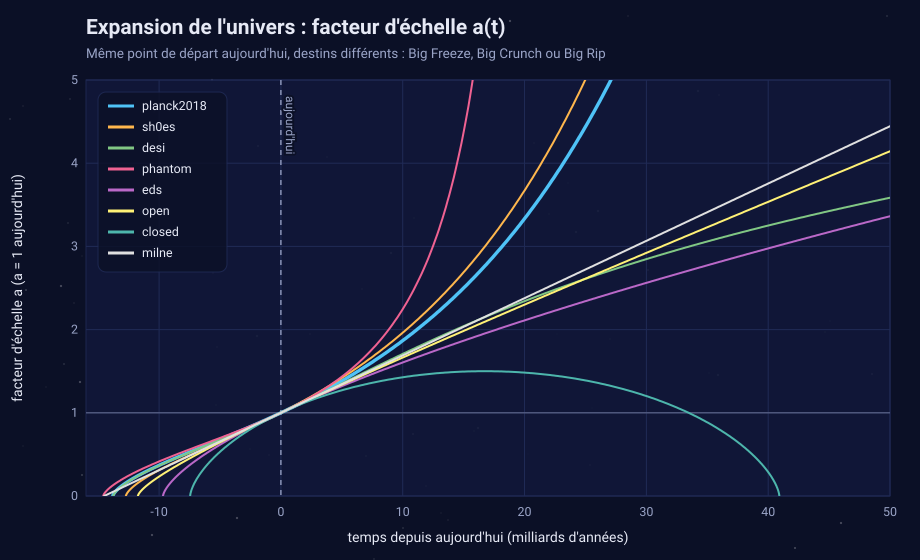
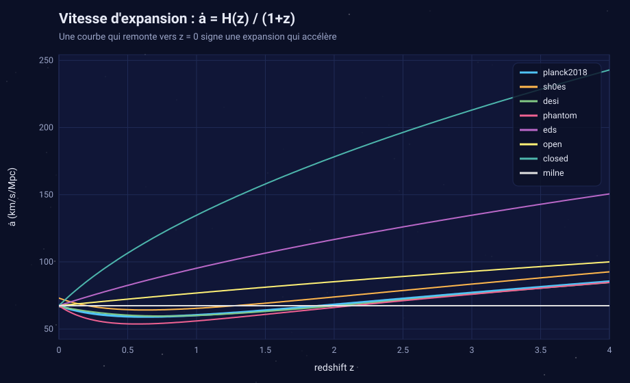
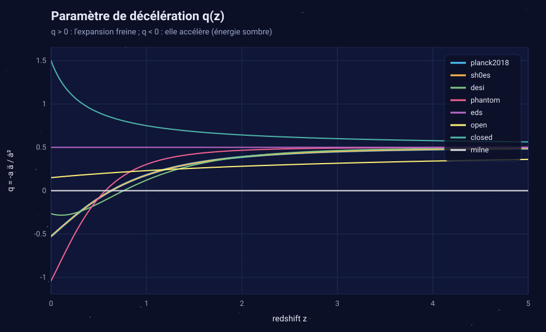
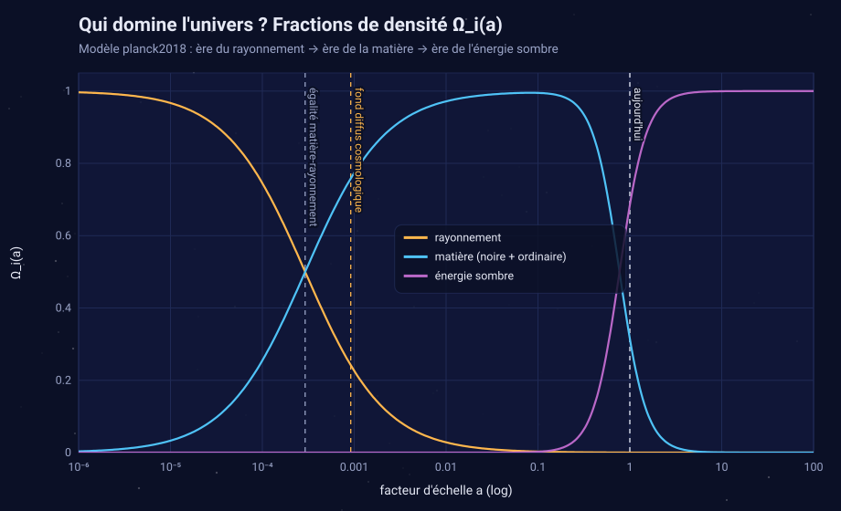
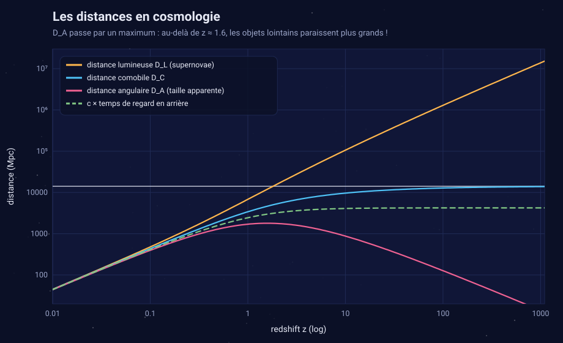
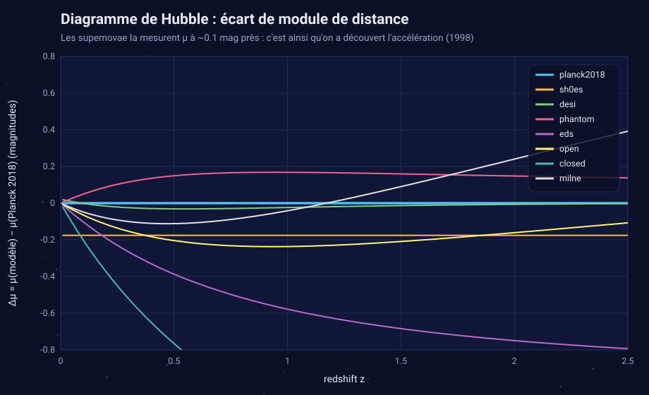
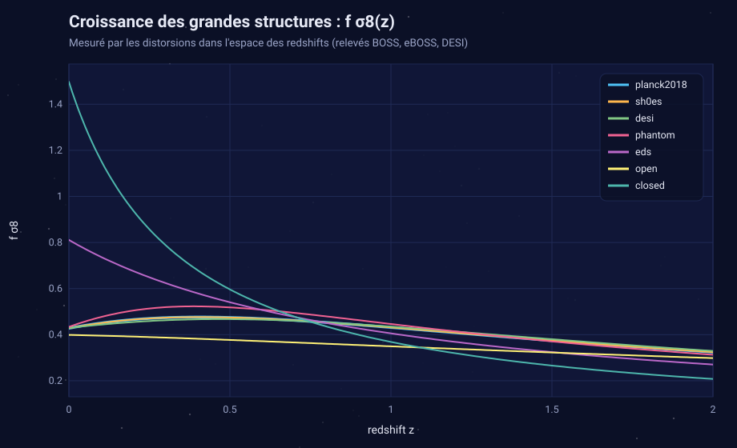
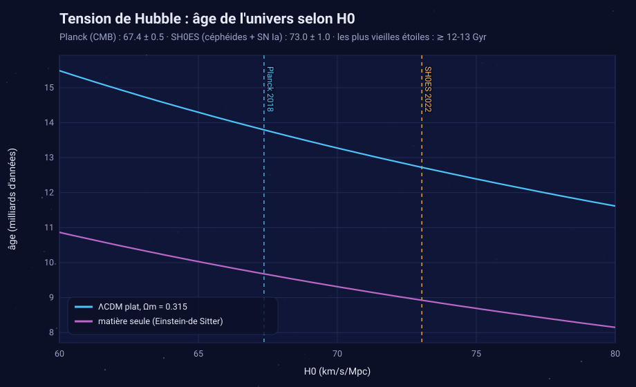
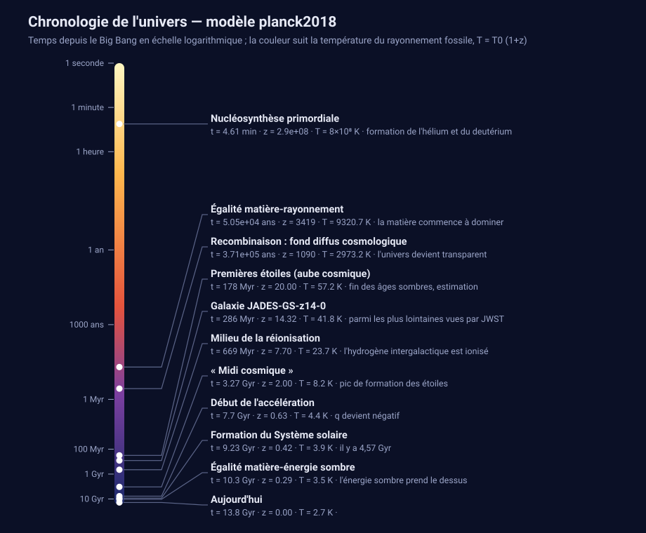

Simulation de l'expansion de l'univers
Modèle planck2018 — Planck 2018 (TT,TE,EE+lowE+lensing), LambdaCDM plat
13.8 Gyrâge de l'univers
14.52 Gyrtemps de Hubble 1/H0
46.14 Galrayon de l'univers observable (milliards d'années-lumière)
5.093atomes d'hydrogène par m³ (densité critique)
expansion accélérée éternelle (Big Freeze)destin
Paramètres
| H0 | Ωm | Ωr | ΩDE | Ωk | w0 | wa | σ8 | T_CMB |
|---|---|---|---|---|---|---|---|---|
| 67.36 km/s/Mpc | 0.3153 | 9.22e-05 | 0.6846 | 0 | -1 | 0 | 0.8111 | 2.725 K |
Chronologie
| Événement | redshift z | âge | il y a | T du CMB |
|---|---|---|---|---|
| Nucléosynthèse primordiale | 2.9e+08 | 4.61 min | 13.8 Gyr | 8×10⁸ K |
| Égalité matière-rayonnement | 3419 | 5.05e+04 ans | 13.8 Gyr | 9320.7 K |
| Recombinaison : fond diffus cosmologique | 1090 | 3.71e+05 ans | 13.8 Gyr | 2973.2 K |
| Premières étoiles (aube cosmique) | 20.00 | 178 Myr | 13.6 Gyr | 57.2 K |
| Galaxie JADES-GS-z14-0 | 14.32 | 286 Myr | 13.5 Gyr | 41.8 K |
| Milieu de la réionisation | 7.70 | 669 Myr | 13.1 Gyr | 23.7 K |
| « Midi cosmique » | 2.00 | 3.27 Gyr | 10.5 Gyr | 8.2 K |
| Début de l'accélération | 0.63 | 7.7 Gyr | 6.1 Gyr | 4.4 K |
| Formation du Système solaire | 0.42 | 9.23 Gyr | 4.57 Gyr | 3.9 K |
| Égalité matière-énergie sombre | 0.29 | 10.3 Gyr | 3.49 Gyr | 3.5 K |
| Aujourd'hui | 0.00 | 13.8 Gyr | 0 s | 2.7 K |
Illustrations









Généré par cosmology_simulation.